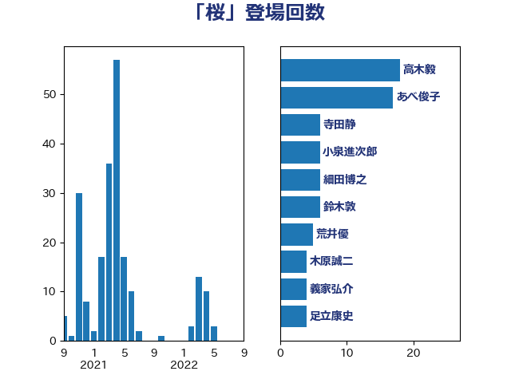

単語「桜」

| 高木毅 | 自由民主党 | 18 回 |
| あべ俊子 | 自由民主党 | 17 回 |
| 寺田静 | 無所属 | 6 回 |
| 小泉進次郎 | 自由民主党 | 6 回 |
| 細田博之 | 自由民主党 | 6 回 |
| 鈴木敦 | 国民民主党 | 6 回 |
| 荒井優 | 立憲民主党 | 5 回 |
| 木原誠二 | 自由民主党 | 4 回 |
| 義家弘介 | 自由民主党 | 4 回 |
| 足立康史 | 日本維新の会 | 4 回 |
| 伊東良孝 | 自由民主党 | 3 回 |
| 古賀之士 | 立憲民主党 | 3 回 |
| 福山哲郎 | 立憲民主党 | 3 回 |
| 馬場伸幸 | 日本維新の会 | 3 回 |
| 松島みどり | 自由民主党 | 2 回 |
| 神谷裕 | 立憲民主党 | 2 回 |
| 細田健一 | 自由民主党 | 2 回 |
| 蓮舫 | 立憲民主党 | 2 回 |
| 三ッ林裕巳 | 自由民主党 | 1 回 |
| 上川陽子 | 自由民主党 | 1 回 |
| 中谷一馬 | 立憲民主党 | 1 回 |
| 伊藤孝恵 | 国民民主党 | 1 回 |
| 国光あやの | 自由民主党 | 1 回 |
| 宮本周司 | 自由民主党 | 1 回 |
| 小熊慎司 | 立憲民主党 | 1 回 |
| 山下芳生 | 日本共産党 | 1 回 |
| 岡本あき子 | 立憲民主党 | 1 回 |
| 岸信夫 | 自由民主党 | 1 回 |
| 後藤祐一 | 立憲民主党 | 1 回 |
| 打越さく良 | 立憲民主党 | 1 回 |
| 本村伸子 | 日本共産党 | 1 回 |
| 杉尾秀哉 | 立憲民主党 | 1 回 |
| 森屋隆 | 立憲民主党 | 1 回 |
| 森山浩行 | 立憲民主党 | 1 回 |
| 清水貴之 | 日本維新の会 | 1 回 |
| 片山大介 | 日本維新の会 | 1 回 |
| 田島麻衣子 | 立憲民主党 | 1 回 |
| 白石洋一 | 立憲民主党 | 1 回 |
| 石井苗子 | 日本維新の会 | 1 回 |
| 石川博崇 | 公明党 | 1 回 |
| 福島伸享 | 無所属 | 1 回 |
| 福田昭夫 | 立憲民主党 | 1 回 |
| 篠原孝 | 立憲民主党 | 1 回 |
| 緑川貴士 | 立憲民主党 | 1 回 |
| 西村康稔 | 自由民主党 | 1 回 |
| 西銘恒三郎 | 自由民主党 | 1 回 |
| 赤羽一嘉 | 公明党 | 1 回 |
| 野上浩太郎 | 自由民主党 | 1 回 |
| 金田勝年 | 自由民主党 | 1 回 |
| 鈴木宗男 | 日本維新の会 | 1 回 |
| 高橋千鶴子 | 日本共産党 | 1 回 |
| 高階恵美子 | 自由民主党 | 1 回 |